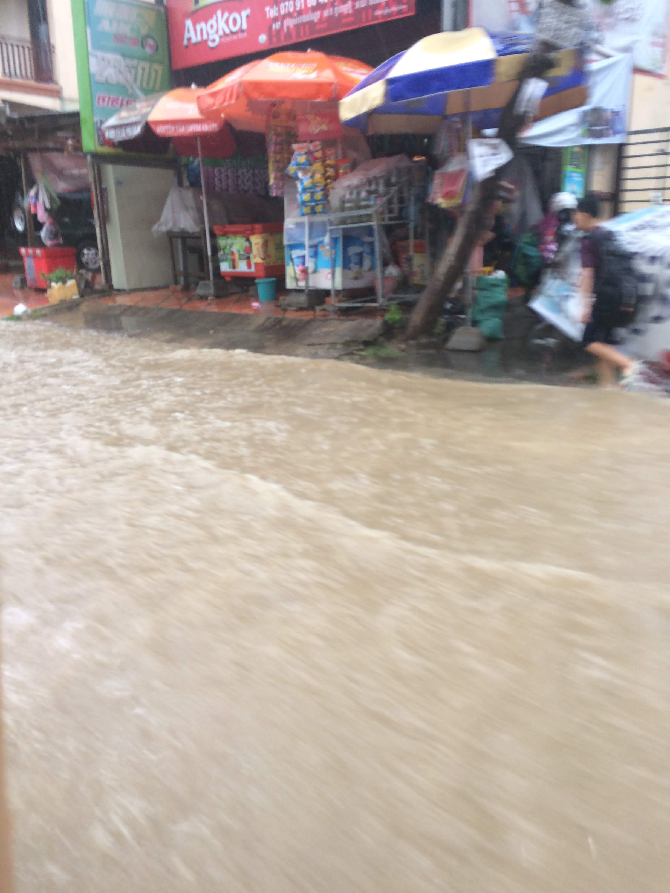

God of the Storm
We are now officially out of the rainy season, and full swing into the cold season. Normally the rainy season lasts roughly from July through November, so it’s the only season we’ve been in since arriving in August. “Rainy season” in Cambodia doesn’t mean it is raining non-stop everyday, but most often it just means that about 4-6 days a week there’s a heavy rain, typically in the evening, that starts with little warning and stops just as suddenly. At least, this was our experience these last couple of months.
There are some inconveniences that come along with the storms, as well as some potential dangers. But at the same time, there is something captivating in particularly the heaviest storms. When we’re out and about, our first response is to head for cover. But when we’re in the safety of our home (…more on that felt “safety” later…), I find it hard not to want to drop whatever I’m doing and stare out the window, or, even better, camp out on the porch for awhile.
The incomparable feeling of thunder in the pit of your stomach; the excitement of catching a glimpse of the lightning itself – even the constant pounding of the rain. All of it makes you feel terribly small, if you allow yourself to think about it for a bit.
And it feels great. I think about how, ever since the Fall itself, we’ve been inventing more and more technology in an attempt to restrain/damper/limit nature and its threat to our existence. Not that this is inherently wrong. But it would be wrong when we allow ourselves to believe the lie that we can build and buy total safety for ourselves and our loved ones.
This is not a new idea; it’s been fleshed out and explored and countless science fiction movies, and of course, originates from the text of scripture itself. This is nothing other than the lie that the world perpetuates about itself: we can have peace in this lifetime, peace apart from God, peace by our own invention, peace independent of Christ and his kingdom.
This truth becomes even more evident when we realize that the “Nature” that we are trying to protect ourselves from is the very hand of God, just judgment against sin. I firmly believe that every hurricane, every earthquake, every natural disaster – storms included – are a direct result of God’s wrath over sin.
Accordingly, we know that God is God of the storm. Not in the sense that he is God over the storm, although that is certainly true (cf Ps 93), but that he is the God who creates the storm. A God to be feared.
 Hence why that shrinking feeling that we get when we really ponder the natural world around us feels so good: it’s the realization that we are so small, so weak, so fragile before Him.
It puts the minor difficulties we face in perspective as well. Most recently it was Rebekah’s infection, and her time in the hospital. The temptation is to start to panic when something’s happening out of my control – but of course, that ignores the fact that nothing is in my control to begin with.
It also puts our feeble attempts to protect ourselves in perspective as well. To be our own safety nets. The walls of our house might slow down a thief or two, but looks awfully inadequate in the face of a hurricane.
At times He teaches us to cling to Him, by winning our battles despite our weakness. But at other times teaches us to stop depending on ourselves by making a mockery of our self-made “defenses” by tearing them down and letting the enemy through.
Not to say, of course, that we should be reckless with our lives. But for us, this is a message that we particularly needed to consider upon arrival in Cambodia. Friends and teammates gave us very helpful advice on what’s safe to do or not do, how to prevent theft of different sorts, and so on – to be clear, extremely helpful advice that allows us to function here in our new environment. But while it is wise for us to heed their advice, we found it so easy to allow how safe we felt to depend on our preparations. To my shame, I was putting my trust and hope in circumstances rather than trusting in God.
Thanksgiving and Recent Happenings
- Our team got together for Thanksgiving and I never thought I would have a turkey dinner in Cambodia, but a nearby cafe had a seasonal turkey plate on their menu! Thankful for our time with our brothers and sisters and small gifts
- We were able to spend a couple of our days off exploring a different town called Kampot (~100 miles away) and more of Cambodia’s beauty. It was a good time to reflect, read, and spend time together as well.
- Our small group at the Khmer church had a gathering to share a meal to celebrate the year and pray for each other.
- Ryan’s friend from college, Bora, (and now “our” friend!) got married and we had the chance to house some of his guests that came from the States. We were blessed by the wedding and are now also blessed by their marriage!
- We’ve had some opportunities to get to know our neighbors, teachers, and community a little better :)
Prayer Requests
Please pray particularly for relationships with the people around us:
- neighbors (saved and unsaved),
- classmates in language school (we’re actually the only Americans in our class),
- church members,
- our teammates, and
- the international missionary community